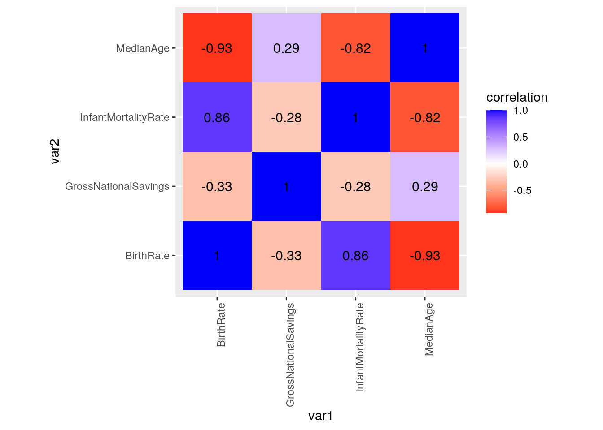
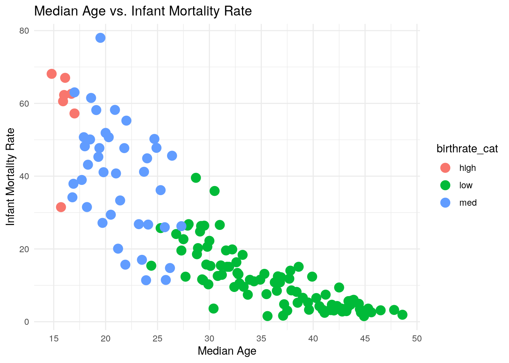
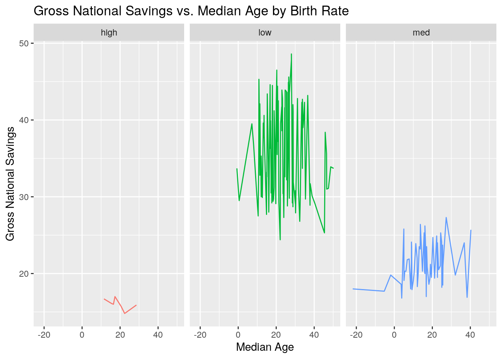
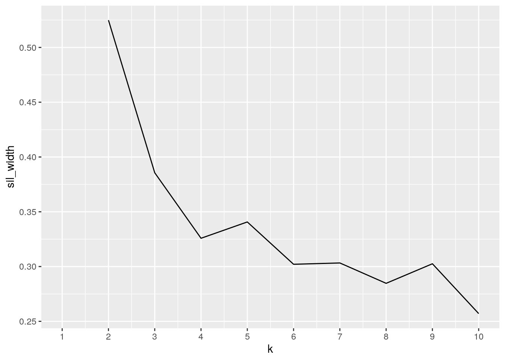
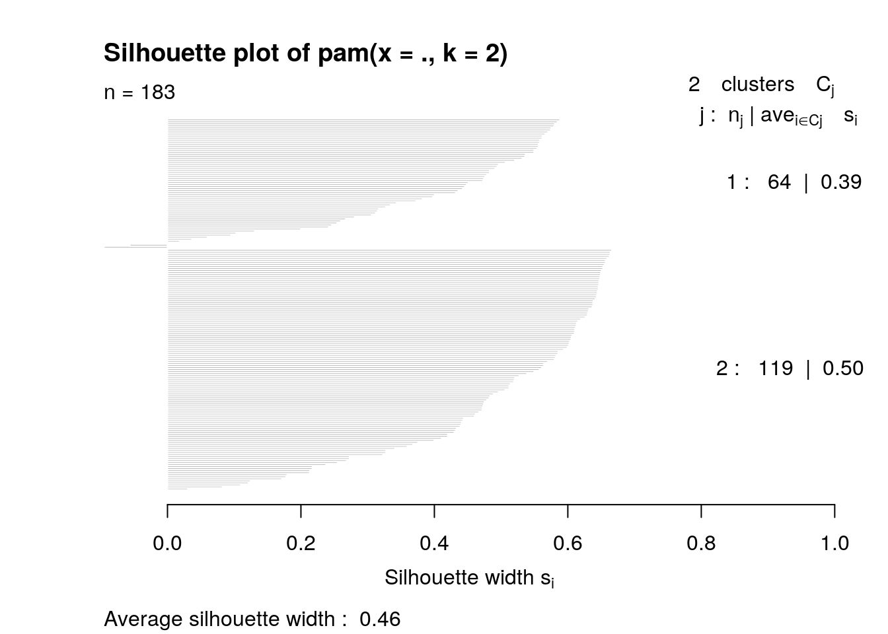
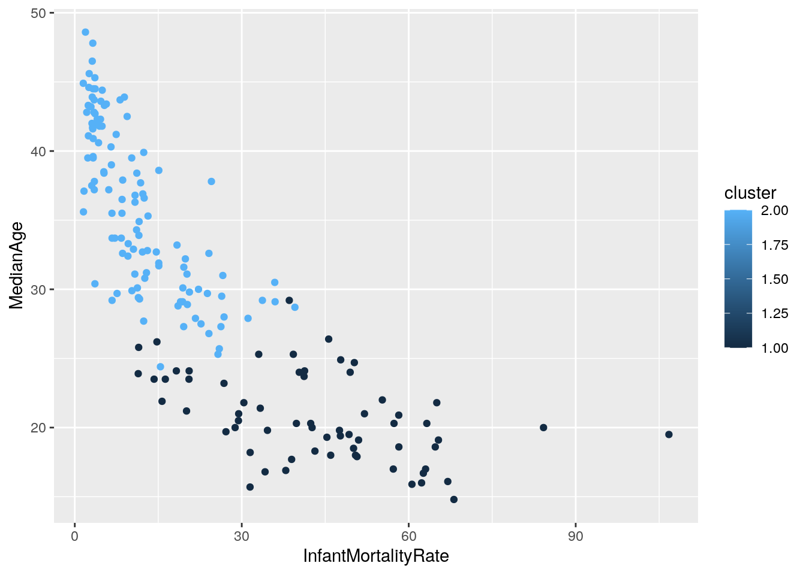

There are many factors that contribute to a country’s standing with the rest of the world. The specific factors that will be explored in this project are the birth rate, gross national savings, median age, and the infant mortality rate by country. The birth rate compares the mean annual number of births a year per 1,000 people in the population. Gross national savings is computed by subtracting final consumption expenditure from gross national disposable income. The median age represents the median age of the population. The infant mortality rate is the number of deaths in infants that are younger than one year old out of 1,000 live births. These datasets were collected by accessing the Central Intelligence Agency’s (CIA) online World Factbook. The World Factbook gives demographic information on 266 world entities. These demographics range from geography, society, economy, energy, and many more. These specific variables were chosen in order to better understand the lives of other cultures outside of the United States and to explore the behaviors of people in today’s society.
# Tidyverse was loaded into R and each data set was imported
library(tidyverse)
birth.rate <- read.csv("~/birth rate.csv", header = FALSE)
gross.national.savings <- read.csv("~/gross national savings.csv",
header = FALSE)
infant.mortality.rate <- read.csv("~/infant mortality rate.csv",
header = FALSE)
median.age <- read.csv("~/median age.csv", header = FALSE)
# The last column of each data set contained no data and was
# removed
birth.rate$V3 <- NULL
gross.national.savings$V3 <- NULL
infant.mortality.rate$V3 <- NULL
median.age$V3 <- NULL
# The remaining 2 columns of each data set were renamed
names(birth.rate)[names(birth.rate) == "V1"] <- "Country"
names(birth.rate)[names(birth.rate) == "V2"] <- "BirthRate"
names(gross.national.savings)[names(gross.national.savings) ==
"V1"] <- "Country"
names(gross.national.savings)[names(gross.national.savings) ==
"V2"] <- "GrossNationalSavings"
names(infant.mortality.rate)[names(infant.mortality.rate) ==
"V1"] <- "Country"
names(infant.mortality.rate)[names(infant.mortality.rate) ==
"V2"] <- "InfantMortalityRate"
names(median.age)[names(median.age) == "V1"] <- "Country"
names(median.age)[names(median.age) == "V2"] <- "MedianAge"# The Birth Rate data set was untidied with pivot_wider
birth.rate1 <- birth.rate %>% pivot_wider(names_from = "Country",
values_from = "BirthRate")
glimpse(birth.rate1)## Rows: 1
## Columns: 227
## $ Niger <dbl> 47.28
## $ Angola <dbl> 42.22
## $ Mali <dbl> 41.6
## $ Uganda <dbl> 41.6
## $ Benin <dbl> 41.55
## $ Chad <dbl> 41.05
## $ `Congo, Democratic Republic of the` <dbl> 40.53
## $ `South Sudan` <dbl> 38.26
## $ Somalia <dbl> 38.25
## $ Mozambique <dbl> 38.03
## $ Liberia <dbl> 36.96
## $ `Guinea-Bissau` <dbl> 36.64
## $ Afghanistan <dbl> 36.08
## $ Cameroon <dbl> 35.91
## $ Guinea <dbl> 35.86
## $ Burundi <dbl> 35.48
## $ Zambia <dbl> 35.23
## $ `Sierra Leone` <dbl> 35.04
## $ Nigeria <dbl> 34.38
## $ `Burkina Faso` <dbl> 34.34
## $ Tanzania <dbl> 33.71
## $ Sudan <dbl> 33.63
## $ Zimbabwe <dbl> 33.34
## $ `Central African Republic` <dbl> 33.2
## $ Togo <dbl> 32.34
## $ `Congo, Republic of the` <dbl> 32.15
## $ `Timor-Leste` <dbl> 31.45
## $ Senegal <dbl> 31.31
## $ Ethiopia <dbl> 31.03
## $ `Equatorial Guinea` <dbl> 30.09
## $ Madagascar <dbl> 29.22
## $ Ghana <dbl> 29.08
## $ `Sao Tome and Principe` <dbl> 28.94
## $ `Cote d'Ivoire` <dbl> 28.67
## $ Malawi <dbl> 28.59
## $ Mauritania <dbl> 28.49
## $ `Gaza Strip` <dbl> 28.1
## $ Eritrea <dbl> 27.41
## $ Rwanda <dbl> 27.18
## $ Pakistan <dbl> 26.95
## $ Kenya <dbl> 26.78
## $ Egypt <dbl> 26.44
## $ `Gambia, The` <dbl> 26.42
## $ Gabon <dbl> 26.14
## $ Namibia <dbl> 25.33
## $ Iraq <dbl> 25.21
## $ Yemen <dbl> 25.21
## $ `West Bank` <dbl> 24.8
## $ Eswatini <dbl> 23.87
## $ Lesotho <dbl> 23.3
## $ Syria <dbl> 23.25
## $ `Solomon Islands` <dbl> 23.07
## $ Comoros <dbl> 22.98
## $ Tuvalu <dbl> 22.97
## $ Guatemala <dbl> 22.79
## $ Jordan <dbl> 22.79
## $ Laos <dbl> 22.74
## $ Philippines <dbl> 22.66
## $ Oman <dbl> 22.58
## $ Djibouti <dbl> 22.43
## $ `Marshall Islands` <dbl> 22.42
## $ Libya <dbl> 22.23
## $ `Papua New Guinea` <dbl> 22.08
## $ Vanuatu <dbl> 21.95
## $ Belize <dbl> 21.62
## $ Nauru <dbl> 21.49
## $ Haiti <dbl> 21.4
## $ Tajikistan <dbl> 21.22
## $ Cambodia <dbl> 20.84
## $ Botswana <dbl> 20.6
## $ Tonga <dbl> 20.6
## $ Bolivia <dbl> 20.36
## $ Kiribati <dbl> 20.27
## $ Kyrgyzstan <dbl> 20.06
## $ Samoa <dbl> 19.32
## $ Algeria <dbl> 19.24
## $ `South Africa` <dbl> 18.89
## $ `Cabo Verde` <dbl> 18.78
## $ Guam <dbl> 18.76
## $ `Micronesia, Federated States of` <dbl> 18.65
## $ `Dominican Republic` <dbl> 18.24
## $ `El Salvador` <dbl> 18.22
## $ Honduras <dbl> 18.19
## $ Kuwait <dbl> 17.9
## $ Bangladesh <dbl> 17.88
## $ Turkmenistan <dbl> 17.85
## $ Nepal <dbl> 17.78
## $ Morocco <dbl> 17.58
## $ Venezuela <dbl> 17.55
## $ India <dbl> 17.53
## $ Israel <dbl> 17.52
## $ Mexico <dbl> 17.29
## $ `American Samoa` <dbl> 17.19
## $ Fiji <dbl> 16.9
## $ Ecuador <dbl> 16.71
## $ Nicaragua <dbl> 16.71
## $ Panama <dbl> 16.67
## $ Peru <dbl> 16.67
## $ Burma <dbl> 16.65
## $ Guyana <dbl> 16.64
## $ Colombia <dbl> 16.51
## $ Paraguay <dbl> 16.43
## $ Mongolia <dbl> 16.32
## $ Brunei <dbl> 16.3
## $ Bhutan <dbl> 16.17
## $ Vietnam <dbl> 16.04
## $ Jamaica <dbl> 16.03
## $ Kazakhstan <dbl> 15.87
## $ Uzbekistan <dbl> 15.85
## $ Argentina <dbl> 15.8
## $ Iran <dbl> 15.78
## $ Maldives <dbl> 15.69
## $ Indonesia <dbl> 15.59
## $ `Northern Mariana Islands` <dbl> 15.31
## $ `Antigua and Barbuda` <dbl> 15.3
## $ Tunisia <dbl> 15.21
## $ Kosovo <dbl> 15.05
## $ `Faroe Islands` <dbl> 14.92
## $ `Bahamas, The` <dbl> 14.78
## $ Malaysia <dbl> 14.72
## $ Suriname <dbl> 14.7
## $ `Saudi Arabia` <dbl> 14.56
## $ Turkey <dbl> 14.54
## $ `Costa Rica` <dbl> 14.53
## $ `Korea, North` <dbl> 14.35
## $ `New Caledonia` <dbl> 14.28
## $ Grenada <dbl> 14.27
## $ `Saint Martin` <dbl> 14.2
## $ Dominica <dbl> 14.16
## $ Azerbaijan <dbl> 14.03
## $ `Sri Lanka` <dbl> 14.01
## $ Gibraltar <dbl> 13.99
## $ Greenland <dbl> 13.88
## $ `Turks and Caicos Islands` <dbl> 13.86
## $ `French Polynesia` <dbl> 13.69
## $ Brazil <dbl> 13.44
## $ Lebanon <dbl> 13.35
## $ Curacao <dbl> 13.29
## $ Iceland <dbl> 13.12
## $ Chile <dbl> 12.92
## $ Albania <dbl> 12.86
## $ `Cook Islands` <dbl> 12.85
## $ `New Zealand` <dbl> 12.83
## $ `Sint Maarten` <dbl> 12.75
## $ Uruguay <dbl> 12.75
## $ Seychelles <dbl> 12.63
## $ Ireland <dbl> 12.6
## $ Bahrain <dbl> 12.5
## $ `Wallis and Futuna` <dbl> 12.49
## $ Jersey <dbl> 12.46
## $ Mauritius <dbl> 12.44
## $ `Saint Vincent and the Grenadines` <dbl> 12.44
## $ `Saint Kitts and Nevis` <dbl> 12.43
## $ Australia <dbl> 12.35
## $ `United States` <dbl> 12.33
## $ `Saint Lucia` <dbl> 12.27
## $ Anguilla <dbl> 12.12
## $ Norway <dbl> 12.09
## $ Aruba <dbl> 11.95
## $ Sweden <dbl> 11.93
## $ `Virgin Islands` <dbl> 11.84
## $ `Cayman Islands` <dbl> 11.77
## $ France <dbl> 11.77
## $ `United Kingdom` <dbl> 11.77
## $ Luxembourg <dbl> 11.62
## $ Palau <dbl> 11.47
## $ Armenia <dbl> 11.45
## $ Montenegro <dbl> 11.35
## $ China <dbl> 11.3
## $ Georgia <dbl> 11.26
## $ Denmark <dbl> 11.17
## $ Montserrat <dbl> 11.14
## $ `Trinidad and Tobago` <dbl> 11.12
## $ Bermuda <dbl> 11.1
## $ Belgium <dbl> 11.03
## $ `British Virgin Islands` <dbl> 10.98
## $ Netherlands <dbl> 10.98
## $ Barbados <dbl> 10.96
## $ `Falkland Islands (Islas Malvinas)` <dbl> 10.9
## $ `United Arab Emirates` <dbl> 10.87
## $ Cyprus <dbl> 10.76
## $ `Isle of Man` <dbl> 10.69
## $ Finland <dbl> 10.49
## $ Moldova <dbl> 10.45
## $ Switzerland <dbl> 10.41
## $ Liechtenstein <dbl> 10.35
## $ Cuba <dbl> 10.25
## $ Thailand <dbl> 10.25
## $ Canada <dbl> 10.21
## $ Malta <dbl> 9.84
## $ Guernsey <dbl> 9.77
## $ Russia <dbl> 9.71
## $ Austria <dbl> 9.48
## $ Lithuania <dbl> 9.42
## $ Macau <dbl> 9.41
## $ Qatar <dbl> 9.38
## $ `Saint Helena, Ascension, and Tristan da Cunha` <dbl> 9.35
## $ Belarus <dbl> 9.32
## $ `Saint Barthelemy` <dbl> 9.27
## $ Ukraine <dbl> 9.23
## $ Singapore <dbl> 9.13
## $ Slovakia <dbl> 9.1
## $ Estonia <dbl> 9.03
## $ Latvia <dbl> 8.96
## $ `San Marino` <dbl> 8.76
## $ Czechia <dbl> 8.75
## $ Serbia <dbl> 8.74
## $ Hungary <dbl> 8.72
## $ Poland <dbl> 8.69
## $ Croatia <dbl> 8.68
## $ Germany <dbl> 8.63
## $ `Bosnia and Herzegovina` <dbl> 8.5
## $ Slovenia <dbl> 8.5
## $ Romania <dbl> 8.39
## $ Italy <dbl> 8.37
## $ `Hong Kong` <dbl> 8.23
## $ Bulgaria <dbl> 8.15
## $ Spain <dbl> 8.05
## $ Portugal <dbl> 8.02
## $ `Puerto Rico` <dbl> 7.9
## $ Greece <dbl> 7.72
## $ Taiwan <dbl> 7.43
## $ Japan <dbl> 7
## $ Andorra <dbl> 6.91
## $ `Korea, South` <dbl> 6.89
## $ Monaco <dbl> 6.63
## $ `Saint Pierre and Miquelon` <dbl> 6.58# The Gross National Savings data set was untidied with
# pivot_wider
gross.national.savings1 <- gross.national.savings %>% pivot_wider(names_from = "Country",
values_from = "GrossNationalSavings")
glimpse(gross.national.savings1)## Rows: 1
## Columns: 183
## $ Qatar <dbl> 50.2
## $ Palau <dbl> 48.7
## $ Brunei <dbl> 47.5
## $ Suriname <dbl> 46.6
## $ Singapore <dbl> 46.5
## $ China <dbl> 45.8
## $ Nepal <dbl> 45.4
## $ Bhutan <dbl> 40.4
## $ Botswana <dbl> 40.3
## $ Panama <dbl> 38.9
## $ Zambia <dbl> 38.3
## $ Iran <dbl> 37.9
## $ Algeria <dbl> 37.8
## $ `Papua New Guinea` <dbl> 36.8
## $ `Korea, South` <dbl> 36.6
## $ Kuwait <dbl> 35.4
## $ Taiwan <dbl> 34.9
## $ Norway <dbl> 34.3
## $ Thailand <dbl> 34.1
## $ `Sri Lanka` <dbl> 33.8
## $ Switzerland <dbl> 33.8
## $ Malta <dbl> 33.5
## $ Ireland <dbl> 33.1
## $ Uzbekistan <dbl> 32.7
## $ `Cabo Verde` <dbl> 32.4
## $ Ethiopia <dbl> 32.1
## $ Indonesia <dbl> 31.7
## $ Netherlands <dbl> 31.2
## $ Bangladesh <dbl> 30.2
## $ Morocco <dbl> 30.1
## $ `Saudi Arabia` <dbl> 30.1
## $ Vietnam <dbl> 29
## $ Sweden <dbl> 28.9
## $ Denmark <dbl> 28.8
## $ India <dbl> 28.8
## $ Angola <dbl> 28.6
## $ Malaysia <dbl> 28.5
## $ `United Arab Emirates` <dbl> 28.5
## $ Germany <dbl> 28
## $ Japan <dbl> 28
## $ Kyrgyzstan <dbl> 27.3
## $ Austria <dbl> 27
## $ Estonia <dbl> 27
## $ Czechia <dbl> 26.9
## $ Mongolia <dbl> 26.9
## $ `Hong Kong` <dbl> 26.6
## $ Russia <dbl> 26.5
## $ Slovenia <dbl> 26.4
## $ `Trinidad and Tobago` <dbl> 26.4
## $ Ecuador <dbl> 25.9
## $ Iceland <dbl> 25.8
## $ `Faroe Islands` <dbl> 25.7
## $ Hungary <dbl> 25.7
## $ Gabon <dbl> 25.6
## $ Cameroon <dbl> 25.5
## $ Turkey <dbl> 25.5
## $ Bulgaria <dbl> 25.4
## $ Eswatini <dbl> 25.4
## $ Tanzania <dbl> 25
## $ Haiti <dbl> 24.9
## $ Croatia <dbl> 24.7
## $ Azerbaijan <dbl> 24.6
## $ Belarus <dbl> 24.5
## $ Belgium <dbl> 24.5
## $ Tajikistan <dbl> 24.4
## $ Philippines <dbl> 24.3
## $ Mauritania <dbl> 24.2
## $ Nicaragua <dbl> 24
## $ Turkmenistan <dbl> 23.9
## $ Kazakhstan <dbl> 23.7
## $ Israel <dbl> 23.6
## $ Finland <dbl> 23.3
## $ Zimbabwe <dbl> 23.3
## $ Georgia <dbl> 23
## $ Spain <dbl> 23
## $ France <dbl> 22.9
## $ Afghanistan <dbl> 22.7
## $ Laos <dbl> 22.7
## $ Niger <dbl> 22.4
## $ Djibouti <dbl> 22.3
## $ Luxembourg <dbl> 22.3
## $ Honduras <dbl> 22.1
## $ `Dominican Republic` <dbl> 21.6
## $ Mexico <dbl> 21.4
## $ Senegal <dbl> 21.2
## $ Romania <dbl> 21.1
## $ Australia <dbl> 21
## $ `New Zealand` <dbl> 21
## $ Canada <dbl> 20.8
## $ Latvia <dbl> 20.7
## $ Slovakia <dbl> 20.6
## $ Uganda <dbl> 20.6
## $ Chile <dbl> 20.5
## $ Italy <dbl> 20.3
## $ Lesotho <dbl> 20.3
## $ Poland <dbl> 20
## $ `Saint Kitts and Nevis` <dbl> 19.9
## $ Bahrain <dbl> 19.8
## $ Peru <dbl> 19.8
## $ `Congo, Republic of the` <dbl> 19.5
## $ `Saint Lucia` <dbl> 19.4
## $ Iraq <dbl> 19
## $ Colombia <dbl> 18.9
## $ Ukraine <dbl> 18.9
## $ `United States` <dbl> 18.9
## $ `Sao Tome and Principe` <dbl> 18.7
## $ Paraguay <dbl> 18.6
## $ Jamaica <dbl> 18.3
## $ Nigeria <dbl> 18.2
## $ Lithuania <dbl> 18
## $ Armenia <dbl> 17.8
## $ Burma <dbl> 17.7
## $ Argentina <dbl> 17.6
## $ `Antigua and Barbuda` <dbl> 17.3
## $ Benin <dbl> 17.3
## $ Comoros <dbl> 17.3
## $ Kosovo <dbl> 17.3
## $ Uruguay <dbl> 17.2
## $ Aruba <dbl> 17
## $ Syria <dbl> 17
## $ Mauritius <dbl> 16.9
## $ Mozambique <dbl> 16.8
## $ Portugal <dbl> 16.8
## $ Namibia <dbl> 16.7
## $ Mali <dbl> 16.5
## $ Oman <dbl> 16.1
## $ `South Africa` <dbl> 16.1
## $ Togo <dbl> 16.1
## $ Albania <dbl> 15.9
## $ `Cote d'Ivoire` <dbl> 15.9
## $ Bolivia <dbl> 15.7
## $ Chad <dbl> 15.5
## $ Serbia <dbl> 15.3
## $ `Costa Rica` <dbl> 15.1
## $ Brazil <dbl> 15
## $ `El Salvador` <dbl> 14.9
## $ Madagascar <dbl> 14.8
## $ Cambodia <dbl> 13.7
## $ Cyprus <dbl> 13.7
## $ Guatemala <dbl> 13.6
## $ `United Kingdom` <dbl> 13.6
## $ Moldova <dbl> 13.5
## $ Montenegro <dbl> 13.2
## $ `Solomon Islands` <dbl> 13.1
## $ Fiji <dbl> 12.7
## $ Rwanda <dbl> 12.5
## $ `Saint Vincent and the Grenadines` <dbl> 12.1
## $ Sudan <dbl> 12.1
## $ Venezuela <dbl> 12.1
## $ Pakistan <dbl> 12
## $ Tunisia <dbl> 12
## $ Grenada <dbl> 11.7
## $ `Congo, Democratic Republic of the` <dbl> 11.5
## $ `Bahamas, The` <dbl> 11.4
## $ Cuba <dbl> 11.4
## $ Belize <dbl> 11.3
## $ `Bosnia and Herzegovina` <dbl> 11
## $ Greece <dbl> 10.9
## $ Dominica <dbl> 10.8
## $ Guyana <dbl> 10.5
## $ Kenya <dbl> 10.4
## $ `Sierra Leone` <dbl> 10
## $ `Burkina Faso` <dbl> 9.3
## $ Jordan <dbl> 9.1
## $ Egypt <dbl> 9
## $ Ghana <dbl> 9
## $ `Guinea-Bissau` <dbl> 8.6
## $ Seychelles <dbl> 8.1
## $ `West Bank` <dbl> 7.8
## $ Barbados <dbl> 7.2
## $ `Gambia, The` <dbl> 6.8
## $ `Equatorial Guinea` <dbl> 6.1
## $ Eritrea <dbl> 5.5
## $ `Central African Republic` <dbl> 5.4
## $ Guinea <dbl> 5.1
## $ Libya <dbl> 5
## $ Malawi <dbl> 3.9
## $ `South Sudan` <dbl> 3.6
## $ Maldives <dbl> 0.5
## $ Lebanon <dbl> -0.7
## $ Yemen <dbl> -1.9
## $ Burundi <dbl> -5.3
## $ Liberia <dbl> -21.9# The Median Age data set was untidied with pivot_wider
median.age1 <- median.age %>% pivot_wider(names_from = "Country",
values_from = "MedianAge")
glimpse(median.age1)## Rows: 1
## Columns: 226
## $ Monaco <dbl> 55.4
## $ Japan <dbl> 48.6
## $ `Saint Pierre and Miquelon` <dbl> 48.5
## $ Germany <dbl> 47.8
## $ Italy <dbl> 46.5
## $ Andorra <dbl> 46.2
## $ `Hong Kong` <dbl> 45.6
## $ `Saint Barthelemy` <dbl> 45.6
## $ Greece <dbl> 45.3
## $ `San Marino` <dbl> 45.2
## $ Slovenia <dbl> 44.9
## $ `Isle of Man` <dbl> 44.6
## $ Portugal <dbl> 44.6
## $ Austria <dbl> 44.5
## $ Lithuania <dbl> 44.5
## $ Latvia <dbl> 44.4
## $ Guernsey <dbl> 44.3
## $ Croatia <dbl> 43.9
## $ Spain <dbl> 43.9
## $ Bulgaria <dbl> 43.7
## $ Estonia <dbl> 43.7
## $ Liechtenstein <dbl> 43.7
## $ Bermuda <dbl> 43.6
## $ Hungary <dbl> 43.6
## $ `Puerto Rico` <dbl> 43.6
## $ Serbia <dbl> 43.4
## $ `Bosnia and Herzegovina` <dbl> 43.3
## $ Czechia <dbl> 43.3
## $ `Korea, South` <dbl> 43.2
## $ `Saint Helena, Ascension, and Tristan da Cunha` <dbl> 43.2
## $ Finland <dbl> 42.8
## $ Netherlands <dbl> 42.8
## $ Switzerland <dbl> 42.7
## $ Romania <dbl> 42.5
## $ Malta <dbl> 42.3
## $ Taiwan <dbl> 42.3
## $ Cuba <dbl> 42.1
## $ Denmark <dbl> 42
## $ Poland <dbl> 41.9
## $ Canada <dbl> 41.8
## $ Slovakia <dbl> 41.8
## $ `Virgin Islands` <dbl> 41.8
## $ France <dbl> 41.7
## $ Belgium <dbl> 41.6
## $ Ukraine <dbl> 41.2
## $ `Sint Maarten` <dbl> 41.1
## $ Sweden <dbl> 41.1
## $ Belarus <dbl> 40.9
## $ Macau <dbl> 40.8
## $ `United Kingdom` <dbl> 40.6
## $ `Cayman Islands` <dbl> 40.5
## $ Russia <dbl> 40.3
## $ Aruba <dbl> 39.9
## $ Montenegro <dbl> 39.6
## $ Barbados <dbl> 39.5
## $ Luxembourg <dbl> 39.5
## $ Norway <dbl> 39.5
## $ Thailand <dbl> 39
## $ Georgia <dbl> 38.6
## $ `United States` <dbl> 38.5
## $ China <dbl> 38.4
## $ `United Arab Emirates` <dbl> 38.4
## $ `Cook Islands` <dbl> 38.3
## $ Cyprus <dbl> 37.9
## $ Ireland <dbl> 37.8
## $ `Trinidad and Tobago` <dbl> 37.8
## $ Moldova <dbl> 37.7
## $ Australia <dbl> 37.5
## $ Jersey <dbl> 37.5
## $ `British Virgin Islands` <dbl> 37.2
## $ `Faroe Islands` <dbl> 37.2
## $ `New Zealand` <dbl> 37.2
## $ Iceland <dbl> 37.1
## $ `Saint Lucia` <dbl> 36.9
## $ Seychelles <dbl> 36.8
## $ Curacao <dbl> 36.7
## $ Armenia <dbl> 36.6
## $ `Saint Kitts and Nevis` <dbl> 36.5
## $ Mauritius <dbl> 36.3
## $ Anguilla <dbl> 35.7
## $ Singapore <dbl> 35.6
## $ Chile <dbl> 35.5
## $ Gibraltar <dbl> 35.5
## $ Uruguay <dbl> 35.5
## $ `Saint Vincent and the Grenadines` <dbl> 35.3
## $ Dominica <dbl> 34.9
## $ Montserrat <dbl> 34.8
## $ `Korea, North` <dbl> 34.6
## $ `Turks and Caicos Islands` <dbl> 34.6
## $ Albania <dbl> 34.3
## $ Greenland <dbl> 34.3
## $ `Wallis and Futuna` <dbl> 34
## $ Palau <dbl> 33.9
## $ Lebanon <dbl> 33.7
## $ Qatar <dbl> 33.7
## $ `Sri Lanka` <dbl> 33.7
## $ `French Polynesia` <dbl> 33.3
## $ Grenada <dbl> 33.3
## $ `Saint Martin` <dbl> 33.3
## $ Brazil <dbl> 33.2
## $ Bahrain <dbl> 32.9
## $ `New Caledonia` <dbl> 32.9
## $ `Bahamas, The` <dbl> 32.8
## $ `Northern Mariana Islands` <dbl> 32.8
## $ `Antigua and Barbuda` <dbl> 32.7
## $ Tunisia <dbl> 32.7
## $ Azerbaijan <dbl> 32.6
## $ `Costa Rica` <dbl> 32.6
## $ Argentina <dbl> 32.4
## $ Turkey <dbl> 32.2
## $ Vietnam <dbl> 31.9
## $ Iran <dbl> 31.7
## $ Kazakhstan <dbl> 31.6
## $ Colombia <dbl> 31.2
## $ Brunei <dbl> 31.1
## $ Indonesia <dbl> 31.1
## $ Suriname <dbl> 31
## $ `Saudi Arabia` <dbl> 30.8
## $ Kosovo <dbl> 30.5
## $ Israel <dbl> 30.4
## $ Panama <dbl> 30.1
## $ Uzbekistan <dbl> 30.1
## $ Venezuela <dbl> 30
## $ Fiji <dbl> 29.9
## $ Mongolia <dbl> 29.8
## $ Kuwait <dbl> 29.7
## $ Paraguay <dbl> 29.7
## $ Maldives <dbl> 29.5
## $ Guam <dbl> 29.4
## $ Jamaica <dbl> 29.4
## $ Mexico <dbl> 29.3
## $ Burma <dbl> 29.2
## $ Malaysia <dbl> 29.2
## $ Turkmenistan <dbl> 29.2
## $ Bhutan <dbl> 29.1
## $ Morocco <dbl> 29.1
## $ Peru <dbl> 29.1
## $ Algeria <dbl> 28.9
## $ Ecuador <dbl> 28.8
## $ India <dbl> 28.7
## $ `South Africa` <dbl> 28
## $ Bangladesh <dbl> 27.9
## $ `Dominican Republic` <dbl> 27.9
## $ `El Salvador` <dbl> 27.7
## $ Guyana <dbl> 27.5
## $ Kyrgyzstan <dbl> 27.3
## $ Nicaragua <dbl> 27.3
## $ `American Samoa` <dbl> 27.2
## $ Nauru <dbl> 27
## $ `Cabo Verde` <dbl> 26.8
## $ Tuvalu <dbl> 26.6
## $ Cambodia <dbl> 26.4
## $ `Micronesia, Federated States of` <dbl> 26.3
## $ Oman <dbl> 26.2
## $ Libya <dbl> 25.8
## $ Botswana <dbl> 25.7
## $ Kiribati <dbl> 25.7
## $ Samoa <dbl> 25.6
## $ Bolivia <dbl> 25.3
## $ Nepal <dbl> 25.3
## $ Tajikistan <dbl> 25.3
## $ Djibouti <dbl> 24.9
## $ Lesotho <dbl> 24.7
## $ Honduras <dbl> 24.4
## $ Egypt <dbl> 24.1
## $ Haiti <dbl> 24.1
## $ Philippines <dbl> 24.1
## $ Tonga <dbl> 24.1
## $ Laos <dbl> 24
## $ `Papua New Guinea` <dbl> 24
## $ Belize <dbl> 23.9
## $ `Marshall Islands` <dbl> 23.8
## $ Eswatini <dbl> 23.7
## $ Jordan <dbl> 23.5
## $ `Solomon Islands` <dbl> 23.5
## $ Syria <dbl> 23.5
## $ Guatemala <dbl> 23.2
## $ Vanuatu <dbl> 23
## $ Pakistan <dbl> 22
## $ `West Bank` <dbl> 21.9
## $ `Gambia, The` <dbl> 21.8
## $ Namibia <dbl> 21.8
## $ Ghana <dbl> 21.4
## $ Iraq <dbl> 21.2
## $ Gabon <dbl> 21
## $ Mauritania <dbl> 21
## $ Comoros <dbl> 20.9
## $ Zimbabwe <dbl> 20.5
## $ `Cote d'Ivoire` <dbl> 20.3
## $ `Equatorial Guinea` <dbl> 20.3
## $ Eritrea <dbl> 20.3
## $ Madagascar <dbl> 20.3
## $ `Central African Republic` <dbl> 20
## $ Kenya <dbl> 20
## $ Togo <dbl> 20
## $ Ethiopia <dbl> 19.8
## $ Yemen <dbl> 19.8
## $ Rwanda <dbl> 19.7
## $ `Timor-Leste` <dbl> 19.6
## $ Afghanistan <dbl> 19.5
## $ `Congo, Republic of the` <dbl> 19.5
## $ Senegal <dbl> 19.4
## $ `Sao Tome and Principe` <dbl> 19.3
## $ Guinea <dbl> 19.1
## $ `Sierra Leone` <dbl> 19.1
## $ Nigeria <dbl> 18.6
## $ `South Sudan` <dbl> 18.6
## $ Cameroon <dbl> 18.5
## $ Somalia <dbl> 18.5
## $ Sudan <dbl> 18.3
## $ Tanzania <dbl> 18.2
## $ `Gaza Strip` <dbl> 18
## $ `Guinea-Bissau` <dbl> 18
## $ Liberia <dbl> 18
## $ `Burkina Faso` <dbl> 17.9
## $ Burundi <dbl> 17.7
## $ Benin <dbl> 17
## $ Mozambique <dbl> 17
## $ Zambia <dbl> 16.9
## $ Malawi <dbl> 16.8
## $ `Congo, Democratic Republic of the` <dbl> 16.7
## $ Chad <dbl> 16.1
## $ Mali <dbl> 16
## $ Angola <dbl> 15.9
## $ Uganda <dbl> 15.7
## $ Niger <dbl> 14.8# The Infant Mortality Rate data set was untidied with
# pivot_wider
infant.mortality.rate1 <- infant.mortality.rate %>% pivot_wider(names_from = "Country",
values_from = "InfantMortalityRate")
glimpse(infant.mortality.rate1)## Rows: 1
## Columns: 235
## $ Afghanistan <dbl> 106.75
## $ Somalia <dbl> 88.03
## $ `Central African Republic` <dbl> 84.22
## $ Niger <dbl> 68.12
## $ Chad <dbl> 67.02
## $ Niue <dbl> 68.12
## $ `Sierra Leone` <dbl> 65.34
## $ `Gambia, The` <dbl> 65.04
## $ `South Sudan` <dbl> 64.77
## $ `Equatorial Guinea` <dbl> 63.25
## $ Mozambique <dbl> 63.03
## $ `Congo, Democratic Republic of the` <dbl> 62.63
## $ Mali <dbl> 62.31
## $ Angola <dbl> 60.58
## $ Nigeria <dbl> 58.23
## $ Comoros <dbl> 58.21
## $ `Cote d'Ivoire` <dbl> 57.36
## $ Benin <dbl> 57.23
## $ Pakistan <dbl> 55.26
## $ Mauritania <dbl> 52.05
## $ Guinea <dbl> 50.99
## $ `Burkina Faso` <dbl> 50.71
## $ `Guinea-Bissau` <dbl> 50.44
## $ Lesotho <dbl> 50.23
## $ Cameroon <dbl> 50.09
## $ Laos <dbl> 49.48
## $ `Congo, Republic of the` <dbl> 49.28
## $ Djibouti <dbl> 47.78
## $ Senegal <dbl> 47.72
## $ Yemen <dbl> 47.56
## $ Liberia <dbl> 45.98
## $ Cambodia <dbl> 45.62
## $ `Sao Tome and Principe` <dbl> 45.3
## $ Sudan <dbl> 43.15
## $ Togo <dbl> 42.64
## $ Eritrea <dbl> 42.39
## $ Haiti <dbl> 41.29
## $ Eswatini <dbl> 41.2
## $ `Papua New Guinea` <dbl> 40.33
## $ Madagascar <dbl> 39.82
## $ India <dbl> 39.55
## $ `Spratly Islands` <dbl> 40.33
## $ Bolivia <dbl> 39.27
## $ Burundi <dbl> 38.96
## $ Turkmenistan <dbl> 38.54
## $ Zambia <dbl> 37.91
## $ Bhutan <dbl> 35.99
## $ Kosovo <dbl> 35.93
## $ Ethiopia <dbl> 34.62
## $ `Timor-Leste` <dbl> 34.47
## $ Malawi <dbl> 34.19
## $ Burma <dbl> 33.71
## $ Kiribati <dbl> 33.66
## $ Tokelau <dbl> 34.47
## $ Ghana <dbl> 33.33
## $ Tajikistan <dbl> 33.05
## $ Tanzania <dbl> 31.51
## $ Uganda <dbl> 31.49
## $ Bangladesh <dbl> 31.13
## $ Namibia <dbl> 30.38
## $ Tuvalu <dbl> 29.52
## $ Gabon <dbl> 29.45
## $ Zimbabwe <dbl> 29.41
## $ Kenya <dbl> 28.81
## $ Rwanda <dbl> 27.16
## $ `South Africa` <dbl> 26.82
## $ Guatemala <dbl> 26.81
## $ Suriname <dbl> 26.6
## $ Maldives <dbl> 26.4
## $ Kyrgyzstan <dbl> 26.26
## $ Botswana <dbl> 25.97
## $ Nepal <dbl> 25.73
## $ `Trinidad and Tobago` <dbl> 24.55
## $ Azerbaijan <dbl> 24.1
## $ `Cabo Verde` <dbl> 24.1
## $ Paraguay <dbl> 23.83
## $ Guyana <dbl> 22.68
## $ `Micronesia, Federated States of` <dbl> 22.45
## $ `Korea, North` <dbl> 22.42
## $ Venezuela <dbl> 22.23
## $ `Marshall Islands` <dbl> 22.2
## $ `Dominican Republic` <dbl> 21.68
## $ Mongolia <dbl> 20.6
## $ Philippines <dbl> 20.55
## $ `Solomon Islands` <dbl> 20.52
## $ Algeria <dbl> 20.23
## $ Indonesia <dbl> 20.16
## $ Iraq <dbl> 20.08
## $ Turkey <dbl> 19.87
## $ `Saint Helena, Ascension, and Tristan da Cunha` <dbl> 19.77
## $ Kazakhstan <dbl> 19.59
## $ Nicaragua <dbl> 19.57
## $ Uzbekistan <dbl> 19.42
## $ Peru <dbl> 19.37
## $ Morocco <dbl> 19
## $ Samoa <dbl> 18.75
## $ Ecuador <dbl> 18.55
## $ Brazil <dbl> 18.37
## $ Egypt <dbl> 18.25
## $ `Cook Islands` <dbl> 16.33
## $ Syria <dbl> 16.27
## $ `West Bank` <dbl> 15.68
## $ `Cocos (Keeling) Islands` <dbl> 16.33
## $ `Gaza Strip` <dbl> 15.6
## $ Honduras <dbl> 15.39
## $ Georgia <dbl> 15.1
## $ Iran <dbl> 15.1
## $ Vietnam <dbl> 15.09
## $ Oman <dbl> 14.76
## $ Vanuatu <dbl> 14.69
## $ `Antigua and Barbuda` <dbl> 14.65
## $ `British Virgin Islands` <dbl> 14.56
## $ Jordan <dbl> 14.25
## $ `Saint Vincent and the Grenadines` <dbl> 13.16
## $ `Bahamas, The` <dbl> 13.05
## $ Colombia <dbl> 12.88
## $ `Northern Mariana Islands` <dbl> 12.79
## $ Tonga <dbl> 12.73
## $ `Saudi Arabia` <dbl> 12.58
## $ Armenia <dbl> 12.47
## $ Aruba <dbl> 12.39
## $ `El Salvador` <dbl> 12.38
## $ `Saint Lucia` <dbl> 12.23
## $ Tunisia <dbl> 12.16
## $ `Turks and Caicos Islands` <dbl> 11.87
## $ Moldova <dbl> 11.83
## $ Guam <dbl> 11.73
## $ Svalbard <dbl> 12.38
## $ Mexico <dbl> 11.64
## $ Dominica <dbl> 11.56
## $ Palau <dbl> 11.52
## $ Libya <dbl> 11.48
## $ Jamaica <dbl> 11.42
## $ Belize <dbl> 11.4
## $ Panama <dbl> 11.25
## $ China <dbl> 11.15
## $ Albania <dbl> 11.1
## $ Seychelles <dbl> 10.83
## $ Mauritius <dbl> 10.82
## $ Brunei <dbl> 10.79
## $ Montserrat <dbl> 10.7
## $ Bahrain <dbl> 10.54
## $ Fiji <dbl> 10.27
## $ `American Samoa` <dbl> 10.25
## $ Barbados <dbl> 10.23
## $ Grenada <dbl> 9.6
## $ Argentina <dbl> 9.55
## $ Romania <dbl> 9.41
## $ Croatia <dbl> 8.91
## $ Greenland <dbl> 8.9
## $ Cyprus <dbl> 8.61
## $ `Costa Rica` <dbl> 8.59
## $ `Saint Kitts and Nevis` <dbl> 8.5
## $ Uruguay <dbl> 8.48
## $ `Sri Lanka` <dbl> 8.36
## $ `Saint Pierre and Miquelon` <dbl> 8.35
## $ `Coral Sea Islands` <dbl> 8.59
## $ `Sint Maarten` <dbl> 8.16
## $ Bulgaria <dbl> 8.14
## $ Curacao <dbl> 8.05
## $ Nauru <dbl> 7.96
## $ `Cayman Islands` <dbl> 7.84
## $ `Virgin Islands` <dbl> 7.81
## $ Kuwait <dbl> 7.6
## $ `South Georgia and South Sandwich Islands` <dbl> 8.16
## $ Ukraine <dbl> 7.44
## $ Lebanon <dbl> 7.2
## $ `Saint Barthelemy` <dbl> 6.85
## $ `Saint Martin` <dbl> 6.85
## $ Malaysia <dbl> 6.7
## $ Qatar <dbl> 6.7
## $ Chile <dbl> 6.68
## $ `San Marino` <dbl> 6.67
## $ Thailand <dbl> 6.58
## $ Russia <dbl> 6.51
## $ Gibraltar <dbl> 6.38
## $ `Puerto Rico` <dbl> 6.16
## $ `Faroe Islands` <dbl> 6.11
## $ Serbia <dbl> 5.67
## $ `Bosnia and Herzegovina` <dbl> 5.32
## $ `United Arab Emirates` <dbl> 5.25
## $ `United States` <dbl> 5.22
## $ `New Caledonia` <dbl> 5.08
## $ Latvia <dbl> 4.93
## $ Slovakia <dbl> 4.9
## $ Hungary <dbl> 4.69
## $ Macau <dbl> 4.69
## $ Malta <dbl> 4.62
## $ `French Polynesia` <dbl> 4.46
## $ Canada <dbl> 4.44
## $ `Isle of Man` <dbl> 4.31
## $ `United Kingdom` <dbl> 4.27
## $ Poland <dbl> 4.22
## $ Cuba <dbl> 4.19
## $ Liechtenstein <dbl> 4.12
## $ `Wallis and Futuna` <dbl> 4.06
## $ `Paracel Islands` <dbl> 4.46
## $ Taiwan <dbl> 4.03
## $ Jersey <dbl> 3.94
## $ Lithuania <dbl> 3.66
## $ Switzerland <dbl> 3.64
## $ Israel <dbl> 3.62
## $ Greece <dbl> 3.61
## $ Ireland <dbl> 3.52
## $ Andorra <dbl> 3.5
## $ `New Zealand` <dbl> 3.5
## $ Estonia <dbl> 3.47
## $ Netherlands <dbl> 3.45
## $ Guernsey <dbl> 3.41
## $ Belarus <dbl> 3.31
## $ Luxembourg <dbl> 3.3
## $ Austria <dbl> 3.29
## $ Montenegro <dbl> 3.29
## $ Belgium <dbl> 3.24
## $ Germany <dbl> 3.24
## $ France <dbl> 3.19
## $ Italy <dbl> 3.14
## $ Spain <dbl> 3.14
## $ Anguilla <dbl> 3.11
## $ `Ashmore and Cartier Islands` <dbl> 3.29
## $ Denmark <dbl> 3.09
## $ Australia <dbl> 3.05
## $ `Korea, South` <dbl> 2.91
## $ `Hong Kong` <dbl> 2.59
## $ Portugal <dbl> 2.53
## $ Sweden <dbl> 2.45
## $ Czechia <dbl> 2.42
## $ Norway <dbl> 2.34
## $ Bermuda <dbl> 2.21
## $ Finland <dbl> 2.15
## $ Japan <dbl> 1.92
## $ Monaco <dbl> 1.78
## $ Iceland <dbl> 1.66
## $ Singapore <dbl> 1.56
## $ Slovenia <dbl> 1.53# Each data set was then retidied with pivot_longer
birth.rate2 <- birth.rate1 %>% pivot_longer(cols = everything())
glimpse(birth.rate2)## Rows: 227
## Columns: 2
## $ name <chr> "Niger", "Angola", "Mali", "Uganda", "Benin", "Chad", "Congo, D…
## $ value <dbl> 47.28, 42.22, 41.60, 41.60, 41.55, 41.05, 40.53, 38.26, 38.25, …gross.national.savings2 <- gross.national.savings1 %>% pivot_longer(cols = everything())
glimpse(gross.national.savings2)## Rows: 183
## Columns: 2
## $ name <chr> "Qatar", "Palau", "Brunei", "Suriname", "Singapore", "China", "…
## $ value <dbl> 50.2, 48.7, 47.5, 46.6, 46.5, 45.8, 45.4, 40.4, 40.3, 38.9, 38.…median.age2 <- median.age1 %>% pivot_longer(cols = everything())
glimpse(median.age2)## Rows: 226
## Columns: 2
## $ name <chr> "Monaco", "Japan", "Saint Pierre and Miquelon", "Germany", "Ita…
## $ value <dbl> 55.4, 48.6, 48.5, 47.8, 46.5, 46.2, 45.6, 45.6, 45.3, 45.2, 44.…infant.mortality.rate2 <- infant.mortality.rate1 %>% pivot_longer(cols = everything())
glimpse(infant.mortality.rate2)## Rows: 235
## Columns: 2
## $ name <chr> "Afghanistan", "Somalia", "Central African Republic", "Niger", …
## $ value <dbl> 106.75, 88.03, 84.22, 68.12, 67.02, 68.12, 65.34, 65.04, 64.77,…All of the data obtained from the CIA World Factbook was already tidy, so I untidied them with pivot_wider. In untidying the data, the number of columns went from 2 to however many countries the data set contained. For example, the data set that contained birth rates went from 2 columns to 227 columns, as the data set contained 227 countries. In order to retidy the data, I used pivot_longer to restore the original dimensions of the data set.
merged <- inner_join(birth.rate, gross.national.savings, by = "Country")
merged2 <- inner_join(merged, median.age, by = "Country")
finalmerged <- inner_join(merged2, infant.mortality.rate, by = "Country")
glimpse(finalmerged)## Rows: 183
## Columns: 5
## $ Country <fct> "Niger", "Angola", "Mali", "Uganda", "Benin", "C…
## $ BirthRate <dbl> 47.28, 42.22, 41.60, 41.60, 41.55, 41.05, 40.53,…
## $ GrossNationalSavings <dbl> 22.4, 28.6, 16.5, 20.6, 17.3, 15.5, 11.5, 3.6, 1…
## $ MedianAge <dbl> 14.8, 15.9, 16.0, 15.7, 17.0, 16.1, 16.7, 18.6, …
## $ InfantMortalityRate <dbl> 68.12, 60.58, 62.31, 31.49, 57.23, 67.02, 62.63,…An inner join was performed to merge all 4 data sets. Two data sets were merged at a time until all 4 were merged into one. In the original data sets, there were 227 observations in the birth rate data set, 183 observations in the gross national savings data set, 226 observations in the median age data set, and 235 observations in the infant mortality rate data set. Upon merging the data with an inner join, multiple observations were dropped. The total number of observations after joining all data sets was 183 countries. An inner join was performed because some data sets didn’t contain data on a specific country that another data set might have. Therefore, I only wanted to keep observations that matched across all ID variables. A potential problem with dropping countries in the merged data set is that they will not be represented when interpreting the data. The countries that weren’t dropped may not be completely representative of the countries that were dropped, leading to skewed results.
# All six core dplyr functions were used to generate summary
# tables/statistics
finalmerged <- finalmerged %>% mutate(birthrate_cat = ifelse(BirthRate >
40, "high", ifelse(BirthRate <= 40 & 20 <= BirthRate, "med",
"low")))
finalmerged %>% filter(MedianAge == max(MedianAge))## Country BirthRate GrossNationalSavings MedianAge InfantMortalityRate
## 1 Japan 7 28 48.6 1.92
## birthrate_cat
## 1 lowfinalmerged %>% arrange(Country)## Country BirthRate GrossNationalSavings MedianAge
## 1 Afghanistan 36.08 22.7 19.5
## 2 Albania 12.86 15.9 34.3
## 3 Algeria 19.24 37.8 28.9
## 4 Angola 42.22 28.6 15.9
## 5 Antigua and Barbuda 15.30 17.3 32.7
## 6 Argentina 15.80 17.6 32.4
## 7 Armenia 11.45 17.8 36.6
## 8 Aruba 11.95 17.0 39.9
## 9 Australia 12.35 21.0 37.5
## 10 Austria 9.48 27.0 44.5
## 11 Azerbaijan 14.03 24.6 32.6
## 12 Bahamas, The 14.78 11.4 32.8
## 13 Bahrain 12.50 19.8 32.9
## 14 Bangladesh 17.88 30.2 27.9
## 15 Barbados 10.96 7.2 39.5
## 16 Belarus 9.32 24.5 40.9
## InfantMortalityRate birthrate_cat
## 1 106.75 med
## 2 11.10 low
## 3 20.23 low
## 4 60.58 high
## 5 14.65 low
## 6 9.55 low
## 7 12.47 low
## 8 12.39 low
## 9 3.05 low
## 10 3.29 low
## 11 24.10 low
## 12 13.05 low
## 13 10.54 low
## 14 31.13 low
## 15 10.23 low
## 16 3.31 low
## [ reached 'max' / getOption("max.print") -- omitted 167 rows ]finalmerged %>% select(Country, BirthRate, InfantMortalityRate)## Country BirthRate InfantMortalityRate
## 1 Niger 47.28 68.12
## 2 Angola 42.22 60.58
## 3 Mali 41.60 62.31
## 4 Uganda 41.60 31.49
## 5 Benin 41.55 57.23
## 6 Chad 41.05 67.02
## 7 Congo, Democratic Republic of the 40.53 62.63
## 8 South Sudan 38.26 64.77
## 9 Mozambique 38.03 63.03
## 10 Liberia 36.96 45.98
## 11 Guinea-Bissau 36.64 50.44
## 12 Afghanistan 36.08 106.75
## 13 Cameroon 35.91 50.09
## 14 Guinea 35.86 50.99
## 15 Burundi 35.48 38.96
## 16 Zambia 35.23 37.91
## 17 Sierra Leone 35.04 65.34
## 18 Nigeria 34.38 58.23
## 19 Burkina Faso 34.34 50.71
## 20 Tanzania 33.71 31.51
## 21 Sudan 33.63 43.15
## 22 Zimbabwe 33.34 29.41
## 23 Central African Republic 33.20 84.22
## 24 Togo 32.34 42.64
## 25 Congo, Republic of the 32.15 49.28
## 26 Senegal 31.31 47.72
## 27 Ethiopia 31.03 34.62
## 28 Equatorial Guinea 30.09 63.25
## 29 Madagascar 29.22 39.82
## 30 Ghana 29.08 33.33
## 31 Sao Tome and Principe 28.94 45.30
## 32 Cote d'Ivoire 28.67 57.36
## 33 Malawi 28.59 34.19
## [ reached 'max' / getOption("max.print") -- omitted 150 rows ]# Summary statistics were created for each numeric variable
finalmerged %>% summarize(mean_birthrate = mean(BirthRate, na.rm = T),
sd_birthrate = sd(BirthRate, na.rm = T), var_birthrate = var(BirthRate,
na.rm = T), min_birthrate = min(BirthRate, na.rm = T),
max_birthrate = max(BirthRate, na.rm = T))## mean_birthrate sd_birthrate var_birthrate min_birthrate max_birthrate
## 1 18.81612 9.376178 87.91271 6.89 47.28finalmerged %>% summarize(mean_grossnational = mean(GrossNationalSavings,
na.rm = T), sd_grossnational = sd(GrossNationalSavings, na.rm = T),
var_grossnational = var(GrossNationalSavings, na.rm = T),
min_grossnational = min(GrossNationalSavings, na.rm = T),
max_grossnational = max(GrossNationalSavings, na.rm = T))## mean_grossnational sd_grossnational var_grossnational min_grossnational
## 1 20.97049 10.6384 113.1756 -21.9
## max_grossnational
## 1 50.2finalmerged %>% summarize(mean_medianage = mean(MedianAge, na.rm = T),
sd_medianage = sd(MedianAge, na.rm = T), var_medianage = var(MedianAge,
na.rm = T), min_medianage = min(MedianAge, na.rm = T),
max_medianage = max(MedianAge, na.rm = T))## mean_medianage sd_medianage var_medianage min_medianage max_medianage
## 1 30.66393 8.969454 80.45111 14.8 48.6finalmerged %>% summarize(mean_infantmortality = mean(InfantMortalityRate,
na.rm = T), sd_infantmortality = sd(InfantMortalityRate,
na.rm = T), var_infantmortality = var(InfantMortalityRate,
na.rm = T), min_infantmortality = min(InfantMortalityRate,
na.rm = T), max_infantmortality = max(InfantMortalityRate,
na.rm = T))## mean_infantmortality sd_infantmortality var_infantmortality
## 1 22.6029 20.01062 400.4251
## min_infantmortality max_infantmortality
## 1 1.53 106.75# Summarizing after grouping by a categorical variable
finalmerged %>% group_by(birthrate_cat) %>% summarize(mean_infantmortality = mean(InfantMortalityRate,
na.rm = T), sd_infantmortality = sd(InfantMortalityRate,
na.rm = T), var_infantmortality = var(InfantMortalityRate,
na.rm = T), min_infantmortality = min(InfantMortalityRate,
na.rm = T))## # A tibble: 3 x 5
## birthrate_cat mean_infantmort… sd_infantmortal… var_infantmorta…
## <chr> <dbl> <dbl> <dbl>
## 1 high 58.5 12.5 155.
## 2 low 11.4 8.94 79.8
## 3 med 41.1 18.1 329.
## # … with 1 more variable: min_infantmortality <dbl>finalmerged %>% group_by(birthrate_cat) %>% summarize(mean_grossnational = mean(GrossNationalSavings,
na.rm = T), sd_grossnational = sd(GrossNationalSavings, na.rm = T),
var_grossnational = var(GrossNationalSavings, na.rm = T),
min_grossnational = min(GrossNationalSavings, na.rm = T),
max_grossnational = max(GrossNationalSavings, na.rm = T))## # A tibble: 3 x 6
## birthrate_cat mean_grossnatio… sd_grossnational var_grossnation…
## <chr> <dbl> <dbl> <dbl>
## 1 high 18.9 5.54 30.6
## 2 low 23.8 9.85 97.0
## 3 med 15.6 10.6 113.
## # … with 2 more variables: min_grossnational <dbl>, max_grossnational <dbl># A correlation matrix for all numeric variables was created
cormat <- finalmerged %>% select_if(is.numeric) %>% cor(use = "pair")A categorical variable was first created with mutate, as all variables were numerical. I decided to categorize the birth rate of each country, be designating the birth rates as “high,” “medium,” or “low.” The filter function was then used to find the country with the highest median age which was Japan. Next, the countries were arranged in alphabetical order from A to Z and finally, each country was selected to just compare the birth rates and the infant mortality rates. Summary statistics were then generated for each variable, with these summary statistics being the mean, standard deviation, variance, minimum, and maximum. It was found that the mean birth rate of all countries included in the data set was considered “low” and that the average median age of people currently alive in the world is about 31 years. Lastly, summarize was used after grouping by the birth rate categorical variable. From this analysis, it was found that countries with a higher birth rate tend to also have higher infant mortality rates, while countries with a lower birth rate tend to have lower infant mortality rates. However, there didn’t seem to be much correlation between birth rate and gross national savings of a country. Lastly, a correlation matrix was generated to find correlations of all numeric variables in my data set.
# A correlation heat map of numeric variables was created
tidycor <- cormat %>% as.data.frame %>% rownames_to_column("var1") %>%
pivot_longer(-1, names_to = "var2", values_to = "correlation")
tidycor %>% ggplot(aes(var1, var2, fill = correlation)) + geom_tile() +
scale_fill_gradient2(low = "red", mid = "white", high = "blue") +
geom_text(aes(label = round(correlation, 2)), color = "black",
size = 4) + theme(axis.text.x = element_text(angle = 90,
hjust = 1)) + coord_fixed()
# An additional 2 ggplots were created
ggplot(data = finalmerged, aes(x = MedianAge, y = InfantMortalityRate)) +
geom_point(size = 4, aes(color = birthrate_cat), stat = "summary",
fun = mean) + theme_minimal() + ggtitle("Median Age vs. Infant Mortality Rate") +
ylab("Infant Mortality Rate") + xlab("Median Age") + scale_x_continuous(breaks = seq(0,
50, 5))
plot1 <- ggplot(data = finalmerged, aes(x = GrossNationalSavings,
y = MedianAge, color = birthrate_cat, group = birthrate_cat)) +
geom_line() + theme(legend.position = "none") + ggtitle("Gross National Savings vs. Median Age by Birth Rate") +
ylab("Gross National Savings") + xlab("Median Age")
plot1 + facet_wrap(~birthrate_cat)
The correlation heatmap shows the correlations between all four of my numeric variables. Based on the heatmap, the magnitude of the correlation between birth rate and median age is the strongest while the magnitude of the correlation between infant mortality rate and gross national savings is the weakest. Birth rate and median age have a negative correlation which makes sense because an increased life span (and therefore a greater median age) comes at the cost of a reduced birth rate. Additionally, birth rate and infant mortality rate have the strongest positive correlation. This makes sense because a higher infant mortality rate will most likely lead to a mother wanting another child, thus increasing the birth rate.
The second plot examines the relationship between median age and infant mortality rate when grouped by the categorical birth rate. The plot further confirms the correlation heatmap in that birth rate and median age are negatively correlated because the countries with lower birth rates are all scattered at the higher end of the median age. There seems to be a negative exponential relationship between median age and infant mortality rate in that as median age increases, the infant mortality rate decreases. However, the graph starts leveling off around 5 infant deaths, indicating that infant mortality rates are never zero.
The last plot examines the relationship between gross national savings and median age when grouped by the categorical birth rate. This plot shows that there is huge variation between the two variables and that they are not well related. For example, in countries with a low birth rate, the gross national savings goes as low to about 25 and as high to about 48 with not much change in the median age. However, a lower birth rate tends to have a higher gross national savings when compared to countries with a higher birth rate.
# The number of clusters was determined with silhouette width
library(cluster)
clust_dat <- finalmerged %>% dplyr::select(InfantMortalityRate,
MedianAge, BirthRate, GrossNationalSavings)
sil_width <- vector()
for (i in 2:10) {
kms <- kmeans(clust_dat, centers = i)
sil <- silhouette(kms$cluster, dist(clust_dat))
sil_width[i] <- mean(sil[, 3])
}
ggplot() + geom_line(aes(x = 1:10, y = sil_width)) + scale_x_continuous(name = "k",
breaks = 1:10)
# A cluster analysis was run using PAM
pam1 <- finalmerged %>% select(InfantMortalityRate, MedianAge,
BirthRate, GrossNationalSavings) %>% scale %>% pam(2)
pam1## Medoids:
## ID InfantMortalityRate MedianAge BirthRate GrossNationalSavings
## [1,] 29 0.8603982 -1.1554699 1.1096078 -0.5800205
## [2,] 127 -0.7047704 0.6506601 -0.6811006 -0.1006252
## Clustering vector:
## [1] 1 1 1 1 1 1 1 1 1 1 1 1 1 1 1 1 1 1 1 1 1 1 1 1 1 1 1 1 1 1 1 1 1 1 1 1 1
## [38] 1 1 1 1 1 1 1 1 1 1 1 1 1 1 1 1 1 1 1 1 1 1 1 1 1 2 1 2 2 2 2 2 2 2 2 2 1
## [75] 2 2 2 2 2 2 2 2 2 2 2 2 2 2 2 2 2 2 2 2 2 2 2 2 2 2
## [ reached getOption("max.print") -- omitted 83 entries ]
## Objective function:
## build swap
## 1.352511 1.263989
##
## Available components:
## [1] "medoids" "id.med" "clustering" "objective" "isolation"
## [6] "clusinfo" "silinfo" "diss" "call" "data"plot(pam1, which = 2)
# The cluster was visualized and interpreted
final <- finalmerged %>% select(InfantMortalityRate, MedianAge,
BirthRate, GrossNationalSavings) %>% mutate(cluster = pam1$clustering)
ggplot(final, aes(x = InfantMortalityRate, y = MedianAge, color = cluster)) +
geom_point()
Based on the results and the average silhouette width of 0.46 or all numeric variables, the structure between the clusters is weak and could be artificial. The number of clusters was determined using silhouette width, which indexes how cohesive and separated clusters are simultaneously. The higher the silhouette width, the better because clusters are more cohesive and more separated. Based on the plot, the number of clusters chosen was 2. Lastly, a plot was created to visualize infant mortality rate and median age, but in clusters based on all 4 numeric variables. The plot started to show some discrimination between clusters that we otherwise may not have been able to see.